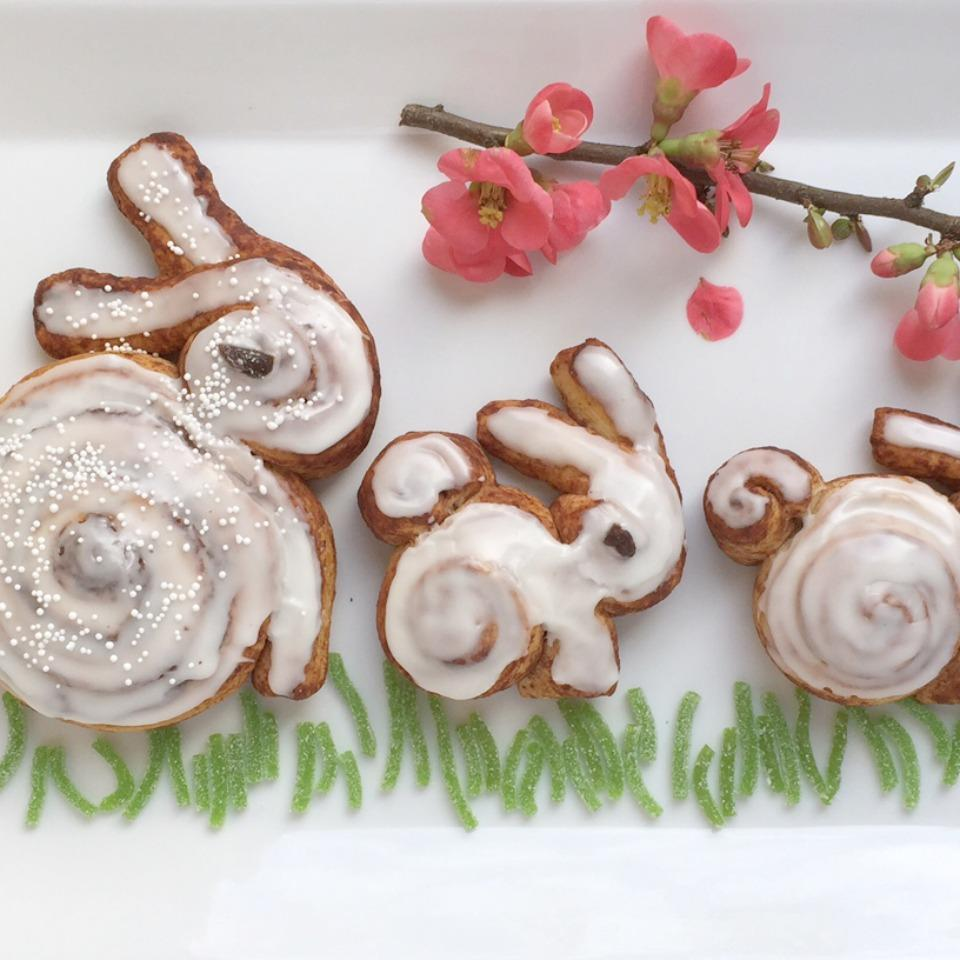

Cinnamon Roll Bunnies

Description
Turn refrigerated cinnamon roll dough into adorable bunnies. These sweet treats are perfect for Easter brunches and baby showers.
Ingredients
- 5 raisins
- 1 (16 ounce) package cinnamon roll dough with glaze (such as Immaculate®)
Steps
- Preheat oven to 350 degrees F (175 degrees C). Line a baking sheet with parchment paper.
- Unroll the dough of 1 cinnamon roll and cut in half. Roll 1 of the halves to form the "body". Rotate the roll so the outer end of the roll is facing downward. This will form the bunny's "front legs". Cut off 1/3 of the remaining dough and roll it up to form the "tail". Roll up the last 2/3 of the dough to about the halfway point to form the "head". Slice through the remaining unrolled portion and fan out the pieces to form the "ears".
- To attach the "tail" and "head" to the "body", rub away any cinnamon coating, wet the dough, and press the pieces together. Spread out the "ears" and pinch them at the tips to shape. Repeat with remaining rolls.
- Transfer the "bunnies" to the prepared baking sheet by carefully lifting with a spatula or scraper.
- Bake in the preheated oven until golden brown, 15 to 18 minutes. Slide parchment paper with "bunnies" onto a rack to cool slightly.
>
- Spread the glaze onto the warm "bunnies", following the pattern of the swirls and ears. Press a raisin in the the center of the swirl on the head to form the "eyes".